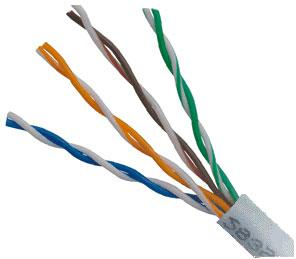
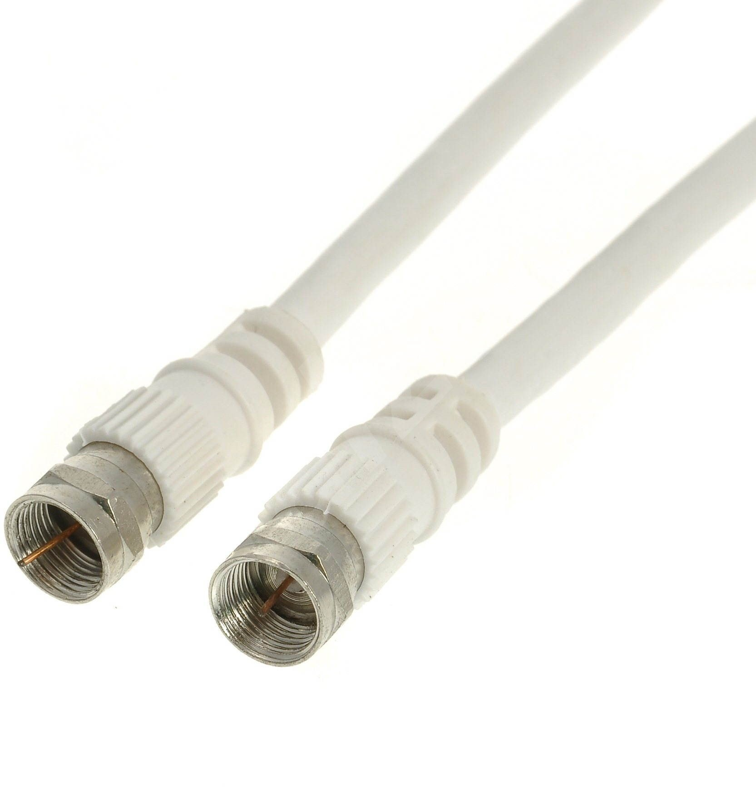
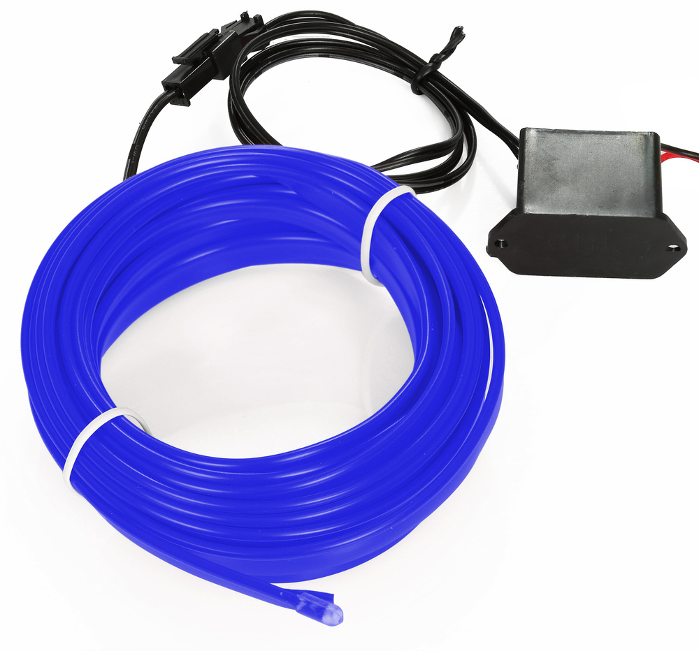
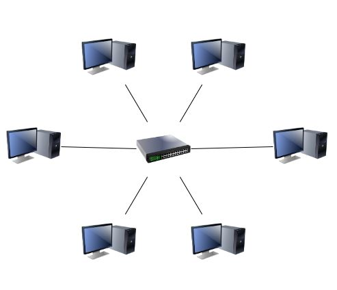

A csavart érpár az egyik legolcsóbb, legelterjedtebben használt átviteli közeg. Két szigetelt rézvezetéket szabályos minta szerint összecsavarnak. Több csavart érpárt fognak össze, és külső szigeteléssel látnak el. Az összefogott érpárokat külön-külön ill. együttesen árnyékolhatják.
A kábel átmérője: 5 - 25 mm. A koncentrikus felépítés miatt kevésbé érzékeny a zavarokra és az áthallásra, mint a csavart érpár. Nagyobb távolságra használható és többpontos alkalmazásban több állomást is képes támogatni.
Hajlékony optikai szál, ami fénysugár továbbítására képes. Optikai szálat üvegből és műanyagból is készítenek. A köpeny (vagy más néven héj), mely tipikusan125μm átmérőjű szintén üveg vagy műanyag, más optikai tulajdonságokkal rendelkezik mint a mag. Az optikai kábelben több optikai szál fut.
A vezeték nélküli átvitel során a közeghozzáférés és az átvitel biztonsága tekintetében teljesen egyedi (a kábel alapú öszzeköttetésekhez képest teljesen más) megoldási mechanizmusok működnek.
